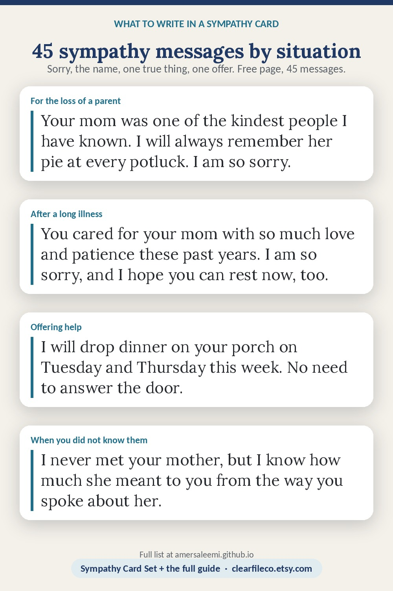

What to write in a sympathy card
Say you are sorry, name the person who died, add one true thing about them or about the person you are writing to, and say what you will do. Two or three sentences is enough. The words in [brackets] are the ones to swap.
Short and simple
When you do not know what to say, say less. These fit on one line and are enough.
- I am so sorry for your loss. You are in my thoughts.
- Holding you close in my heart today and in the days ahead.
- There are no words. Please know I am here, and I am thinking of you.
- Wishing you comfort, peace and people around you who love you.
- With heartfelt sympathy on the loss of your [mother]. She will be missed.
- Thinking of you and your family, and sending all my love.
For the loss of a mother or father
Name the parent and, if you knew them, one specific thing.
- Your mom was one of the kindest people I have known. I will always remember her [pie at every potluck]. I am so sorry.
- I am so sorry about your dad. The way he talked about you made it clear how proud he was.
- Losing a parent changes the shape of the world. I am here for whatever you need, for as long as you need it.
- Your mother gave so much to so many people. I hope the love she left behind holds you up now.
- Thinking of you as you say goodbye to your father. He was a good man, and you are so much like him.
For the loss of a spouse or partner
Acknowledge the size of it; do not try to make it smaller.
- I am heartbroken for you. [Name] was your person, and I know the house must feel very quiet. I am here.
- The two of you were a lesson in what love looks like. I am so sorry you have to go on without him.
- There is nothing I can say that will make this lighter. I can bring dinner on Thursday and sit with you, if that would help.
- Your marriage was a beautiful thing to watch. Holding you in my heart as you grieve her.
- I am so sorry. Whatever the next weeks look like, you will not be doing them alone.
For the loss of a child
Use the child's name. Do not look for a silver lining.
- There are no words for the loss of [Name]. I am so deeply sorry, and I am here for you in any way you need.
- [Name] was loved by everyone who met her, and she will never be forgotten. My heart is with you.
- I will always remember [Name]'s laugh. I am so sorry. Please let me carry some of the small things for you right now.
- Thinking of you every day and holding [Name] in my heart alongside you.
For a sibling, a grandparent or a friend
- I am so sorry about your brother. The bond you two had was something special; I know how much you will miss him.
- Your grandmother lived a long and generous life, and so much of it lives on in you. With sympathy.
- Losing a friend like [Name] leaves a gap nothing fills. I am thinking of you and of all the years you shared.
- Your sister was a bright light. I am holding you and your family close.
After a long illness
You can acknowledge the caregiving without calling the death a relief.
- You cared for your mom with so much love and patience these past years. I am so sorry, and I hope you can rest now, too.
- I know the last months were hard on all of you. Thinking of you as you grieve, and remembering [Name] as he was.
- Watching you show up for your dad every single day was a lesson in love. With deepest sympathy.
A sudden loss
- I am stunned and so sorry. There was no time to prepare for this, and I know the shock is its own grief. I am here.
- I keep thinking of [Name] and of you. Please lean on us; we would be honored to help.
- There is no sense to be made of this. I am just so sorry, and I am not going anywhere.
For the loss of a pet
A pet is family; say so.
- I am so sorry about [Biscuit]. He was family, and the house will feel empty without him. Thinking of you.
- Fourteen years of a dog's love is a rare gift. I am so sorry you had to say goodbye.
- She was the best cat, and she was so loved. Holding you in my thoughts.
- Losing a pet is losing a daily companion. Please be gentle with yourself; I am here if you want to talk about her.
From a coworker, a boss or a team
Keep it warm and short; it can be signed by everyone.
- On behalf of everyone at [company], we are so sorry for your loss. Please take the time you need; we have things covered here.
- Thinking of you and your family. If there is anything the team can do, you only have to ask.
- We were so sorry to hear about your father. With sympathy from all of us.
- Your work family is holding you close. Please let us know how we can support you.
When you did not know the person who died
Center the person you are writing to.
- I never met your mother, but I know how much she meant to you from the way you spoke about her. I am so sorry.
- I am so sorry for your loss. I am thinking of you and hoping you are surrounded by people who love you.
- I did not know [Name], but I know you, and I know this is a heavy loss. I am here.
Offering help
Offer one specific thing instead of "let me know if you need anything".
- I will drop dinner on your porch on Tuesday and Thursday this week. No need to answer the door.
- I can pick the kids up from school next week; just say the word.
- I would like to mow the lawn and take the bins out while you are away. I will text before I come by.
- When you are ready for company, I will come and sit with you; and if you are never ready, that is fine too.
Closing lines
- With deepest sympathy,
- With love and sympathy,
- Thinking of you,
- With heartfelt condolences,
- Holding you in my heart,
- With love, always,
Six things to leave out
- "Everything happens for a reason", "she is in a better place", "at least ..." - they ask the grieving person to agree the loss was somehow all right.
- "I know exactly how you feel" - even if you have lost someone, you do not know this loss. "I cannot imagine" is kinder, or say nothing about yourself.
- "Let me know if you need anything" - a grieving person will not. Offer one specific thing with a day attached.
- Questions about the death - how, why, whether it could have been prevented. They can tell you if they want to.
- Advice - about grief, timelines, faith, or what you would do. A card is for comfort, not guidance.
- Writing too much - three or four sentences is plenty. The thing most remembered is that you wrote at all.
The matching printables
Sympathy Card Set on Etsy →Funeral Prayer Card Template on Etsy →Sympathy Card Set: three card fronts and a verse back in six designs, 5 x 7, with this guide as a PDF. Funeral Prayer Card Template: for the family: a photo, the dates and a verse, in six designs. Instant download; editable in Canva, Google Slides and PowerPoint.

Save it to Pinterest so you can find it again. Free to share; please link to the page rather than copying it.